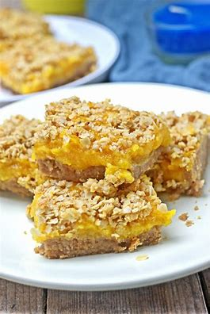

Apricot Bars

Ingredients
Switch to Steps
-
1/2 cup Brown Sugar
-
3/4 cup Flour
-
6 Tbsp Unsalted Butter
-
1 cup Dried Apricots
-
1 cup Water
-
1 Lemon
-
1/3 cup Granulated Sugar
-
2 tsp Corn Starch
-
1/2 cup Walnuts
Steps
Switch to Ingredients
-
Preheat oven to 325F.
-
In a bowl, combine the brown sugar and flour.
-
With a pastry blender, cut in the butter until mixture resembles coarse crumbs.
-
Press the mixture into the bottom of 8" square pan.
-
Bake for 15 minutes.
-
Remove from oven, but leave the oven on.
-
Meanwhile, for the topping, combine the apricots and water in a saucepan
and simmer until soft, about 10 minutes.
-
Strain the liquid and reserve.
-
Chop the apricots.
-
Return the apricots to the saucepan and add the lemon rind, granulated sugar,
corn starch, and 4 Tbsp of the soaking liquid.
-
Cook for 1 minute.
-
Cool slightly before spreading the topping over the base.
Sprinkle the walnuts on top and continue baking for 20 minutes more.
-
Let cool in the pan before cutting into bars